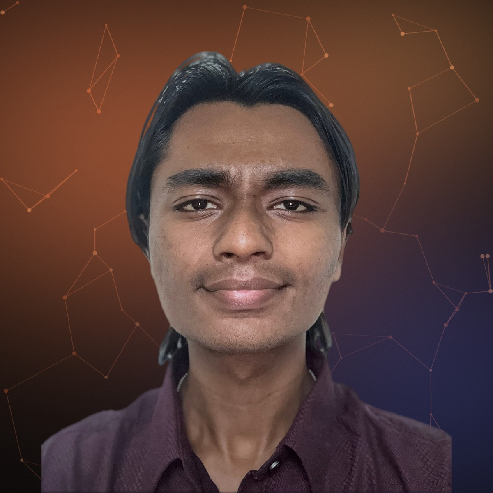

AnshAgrawal
I build machine-learning systems across graphs, language, LLM agents, speech and tabular data — and then test whether their results hold up.
Five systems, one turn.
About
A model that scores well is a claim, not a result.
I am a second-year B.Tech student in Artificial Intelligence & Machine Learning at Universal AI University, India. Each of my projects began from a public tutorial; I extend them — with AI coding assistants — into deployed systems, re-evaluate what they actually do, and write the limitation next to the result.
- 5live, open-source ML systems
- 1stof 24 teams, internal SIH 2026 round
- 2ndyear of a B.Tech, expected 2029
Five systems,five kinds of problem.
Each is live and open source. Every figure below is built from real output — a real citation graph, measured stage timings, and predictions captured from the live demos on 17 October 2026.
How I got here.
Only dated, documented milestones. Ongoing work says so; the last entry is a plan, not an achievement. Each item links to its source.
What I want to learn next.
Each interest comes from one of the five projects.
- Graph representation learningWhen structure helps, and why — from GraphMind
- LLM agents and multi-agent systemsInspectable, bounded pipelines — from Scholaryx
- Retrieval-augmented generationAnswers that show their evidence — from Verbalyx
- Rigorous evaluationCalibration and data leakage — from CreditCompass and Moodalyx
What each project used.
No percentages: a dot means the project’s code uses it.
05 — Experience
Roles
- Artificial Intelligence InternAI Cell, Universal AI University · May – Jul 2026 · remote
Built a university-information chatbot: dense and keyword retrieval fused by reciprocal rank fusion, intent routing, cited answers, FastAPI, tests.
- Industry Outreach AssociateAI ConnectX · Oct 2026 – present
- Member, AI Training Program VerticalAI Cell, Universal AI University · academic year 2025–26
Documentation for two training events, including “Build Your Own AI Calling Agent” (20 Feb 2026).
- AI in Village – Smart ProjectLight of Life Trust · Smart Programme (Environment) · 9–11 Dec 2025
Community feedback collection in villages around Karjat.
Achievements & credentials
- 1st of 24 teams — internal hackathon for SIH 2026Universal AI University · Sep 2026 · team Regnum Carya · role: research & developmentCertificate inspected
- Certificate of AppreciationAI Cell, AI Training Program Vertical · 2025–26Certificate inspected
- SMART Award · Certificate of ParticipationUniversal AI University, Centre for Social, Sustainable & Spiritual Development · 12 Dec 2025Certificate inspected
- Generative AI MastermindOutskill · Sep 2026Certificate inspected
- Advanced AI EngineeringIIT Roorkee × Scaler · Jun 2026 – present · Scaler progress card: top 20% of learners, 77.42% problem solvingIn progress
- Master Python ProgrammingUdemy · 2026Self-reported
Certificates — select one to open it
Let’s talk.
Open to research internships and applied-ML engineering roles where evaluation matters.
ansh.aiml369@gmail.com